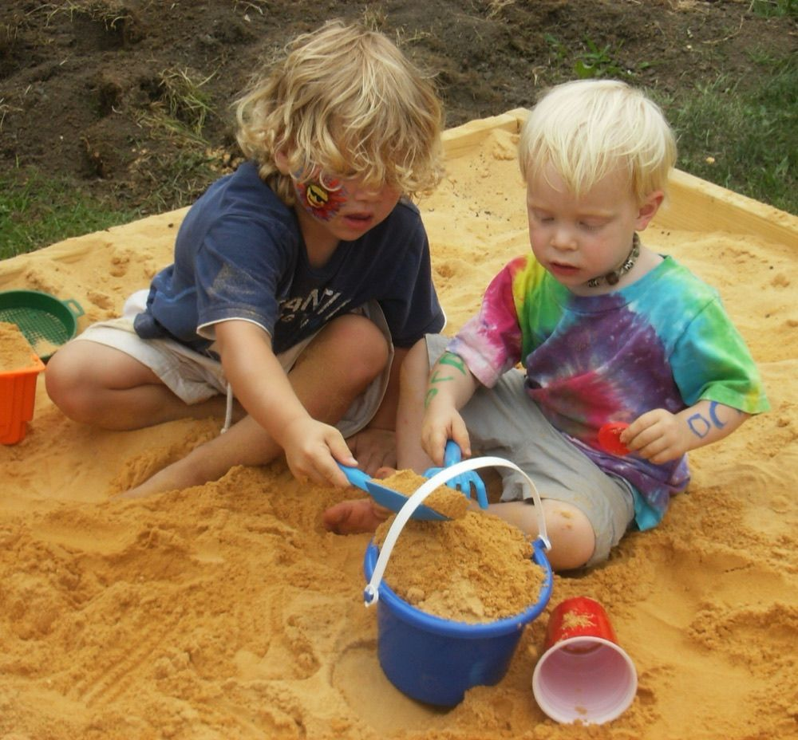
SandboxShape the land
Roads, rivers, castles: a whole world at small scale.
We understand the world by building small versions of it: in sand, in stone, and in what we know.

SandboxRoads, rivers, castles: a whole world at small scale.
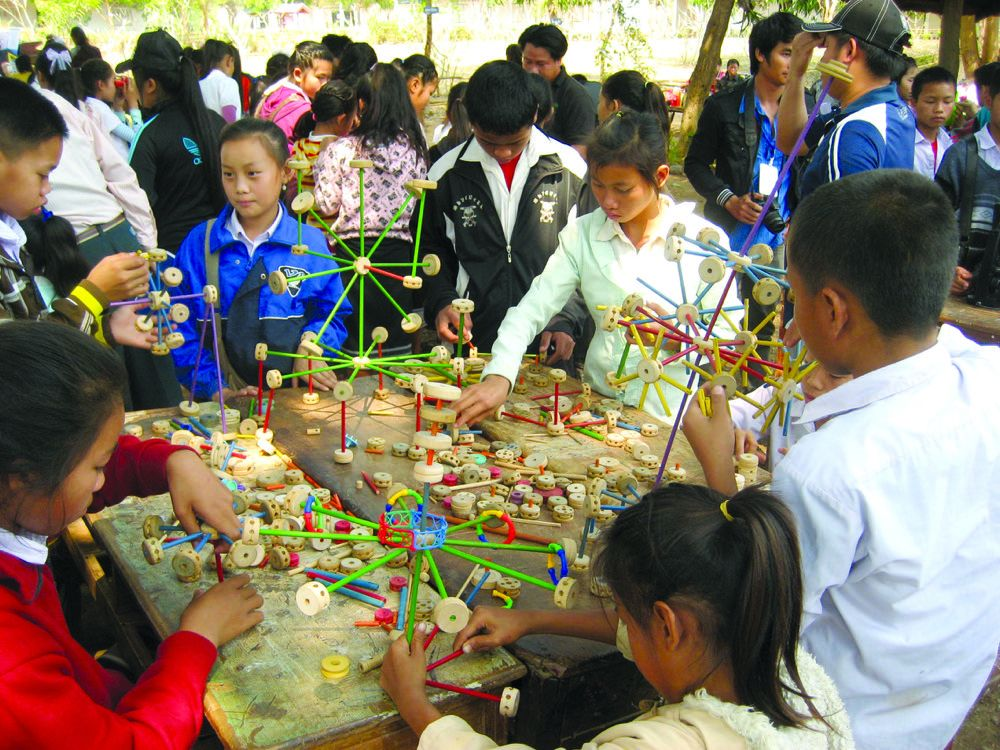
TinkertoysHubs and sticks: a structure you can hold and turn.
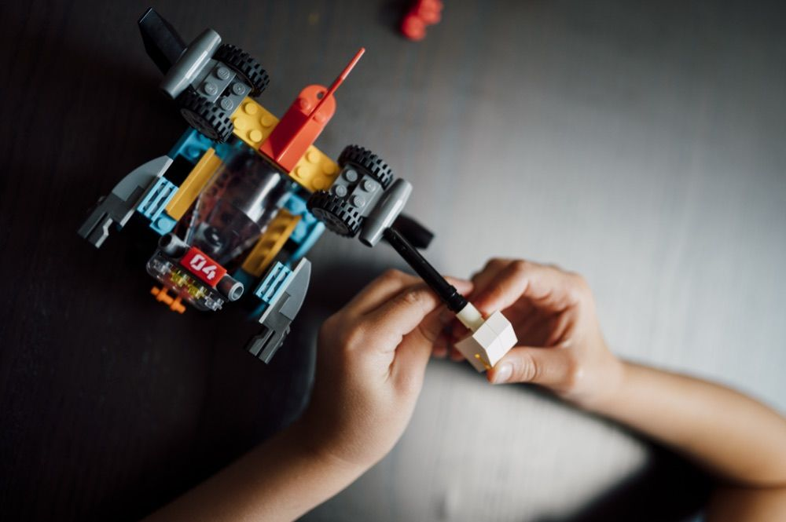
LEGOSmall pieces, endless combinations, rebuilt again and again.
Modeling is fundamental to learning: we understand the world by building small versions of it.
Photos via Wikimedia Commons: Artaxerxes, CC BY-SA 3.0 · Blue Plover, CC BY-SA 3.0 · Nenad Stojkovic, CC BY 2.0
A village at one-ninth scale; a coast in a sandbox.
It keeps some things and leaves the rest out, on purpose.
Sand, sticks, bricks, stones, words, or facts.
Move a piece, try “what if?”, and see what happens.
A model is only good when we hold it up against the real thing and ask what it got right.
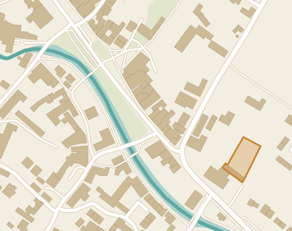
River Windrush The Model Village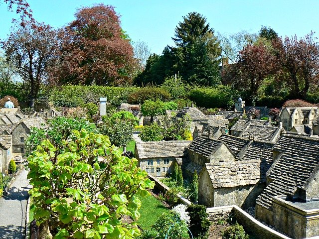
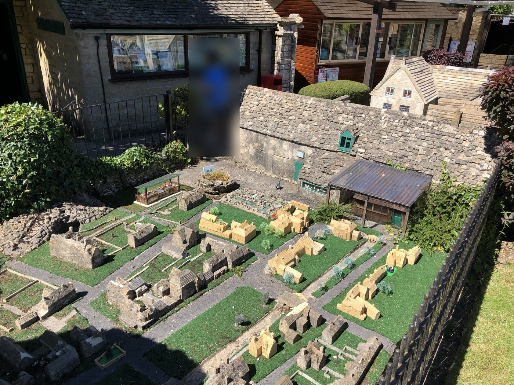
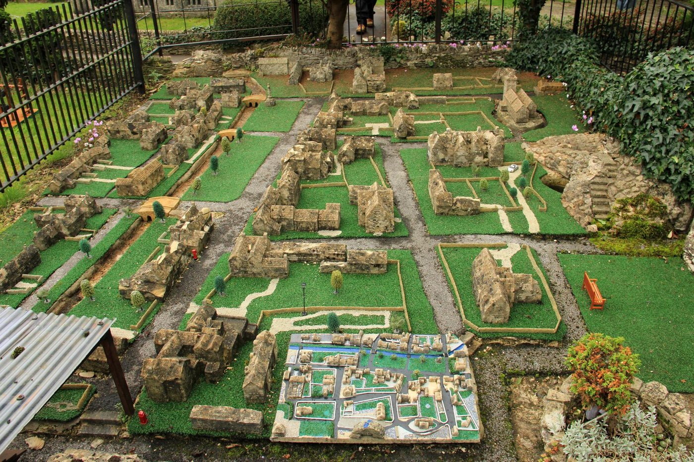
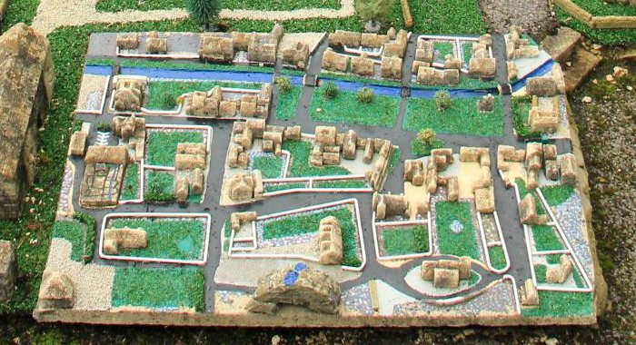
Map data © OpenStreetMap contributors · 1:9 overview: Brian Robert Marshall, CC BY-SA 2.0 · 1:81 from above and 1:729: Karen Roe, CC BY 2.0 · other photos: Paul Fishwick
Bourton-on-the-Water, Gloucestershire. The amber outline is the model village, behind the Old New Inn.
The village rebuilt in Cotswold stone by local craftsmen, 1936–1940.
Inside the model village is a model of the model village.
Now look at the bottom centre.
Each level copies the one that contains it.
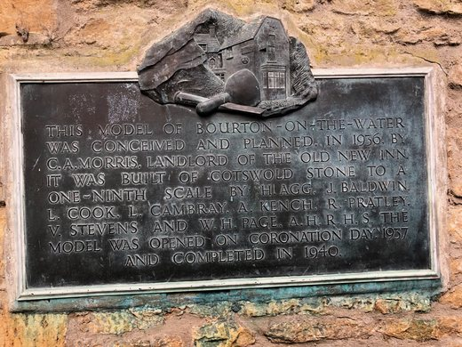
“…built of Cotswold stone to a one-ninth scale… opened on Coronation Day 1937.” — the plaque
Drag each card into a box — or click it to cycle. Kept in the model, or lost?
A model keeps what its makers chose — and freezes it. In time, it becomes a record of the past.
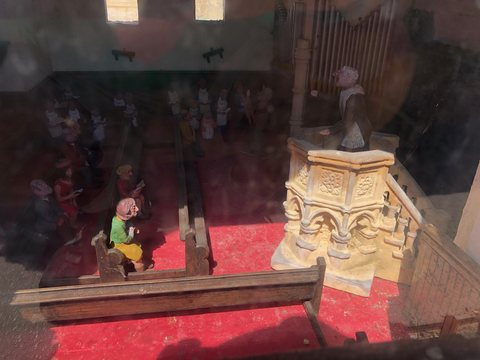
Interiors? Some were kept: the model church has pews, a pulpit and a congregation.
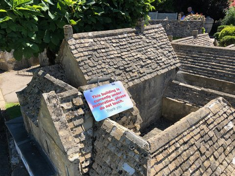
The present day? “This building is under restoration.” The model ages too — but shows the 1930s.
Its parts, facts and relations, written as connected statements.
Its form in space: surfaces, holes, proportions, built as geometry.
Its behavior over time: steps, decisions, loops, and what flows between them.
The model village is built from stone. A knowledge model is built from statements, a shape model from geometry, a dynamic model from steps in time.
The model village copies Bourton-on-the-Water, a village on the River Windrush. It stands behind the Old New Inn, whose landlord, C. A. Morris, conceived it in 1936. It is built of Cotswold stone at one-ninth scale, and opened on Coronation Day 1937. Inside it is a model of the model village.
Stone keeps shapes. This model keeps facts and links.
Click a concept to see its links.
Every knowledge graph is a pile of these. Language models are very good at writing them.
966 words become 13 overlapping pieces of about 100 words.
A language model reads each piece and writes its facts.
Different names for the same thing are merged into one.
New links join parts of the graph that the text left apart.
308 triples become 192 entities joined by 260 links.
The tool writes thousands of facts. Choosing which ones matter is still the modeler’s job.
| The model village | The knowledge model | |
|---|---|---|
| Made of | Cotswold stone, at one-ninth scale | Statements: subject – relation – object |
| Keeps | Shapes, layout, materials, the look of 1937 | Names, facts, dates, who and why |
| Leaves out | People, interiors, the present day | Shape, size, colour, the feel of the place |
| Answers | What does the high street look like? | Who built it, when, and from what? |
| You change it by | Craftsmen rebuilding a house | Adding or correcting a single fact |
Both are smaller, simpler, made of parts and changeable. Both are choices.
Open the app · paste any text; needs an OpenRouter key
Open the graph · from the Lost Art Press post
github.com/robert-mcdermott/ai-knowledge-graph · our Industrial Revolution graph
openrouter.ai/keys · one key for Claude, GPT, Gemini and Grok
The Theory Underlying Concept Maps · free CmapTools from IHMC
“Semantic Memory” (1968), in Minsky, ed., Semantic Information Processing
Use Your Head (BBC, 1974)
Behind the Old New Inn, Gloucestershire · Deep Looking, week 3
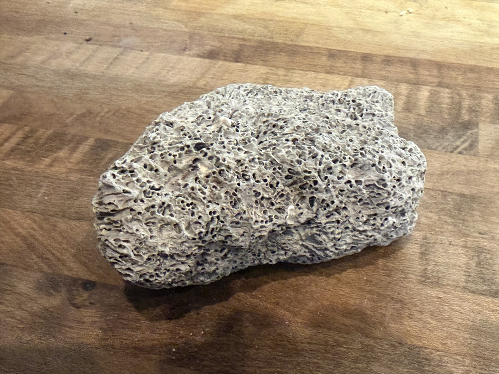
Along Florida’s Atlantic coast, a small marine worm, Phragmatopoma caudata (often called P. lapidosa), about 2 inches long, builds itself a tube.
Thousands of tubes side by side make a reef that shelters fish and crabs. The flared openings give the honeycomb; broken pieces wash up on the beach.
An irregular curve, swept into a sleeve, then carved by thousands of channels into a stone.
Biology: Florida Oceanographic Society, “Sabellariid worm reefs”; Florida reef studies. Photo: Paul Fishwick.
A dynamic model describes behavior over time. Two diagrams answer two questions: control flow, who does what, in what order, and when to decide or repeat; and data flow, what moves between the steps: matter, energy and signals.
Simplified from the toaster’s own diagrams in Simple Machines. Each machine there has both.